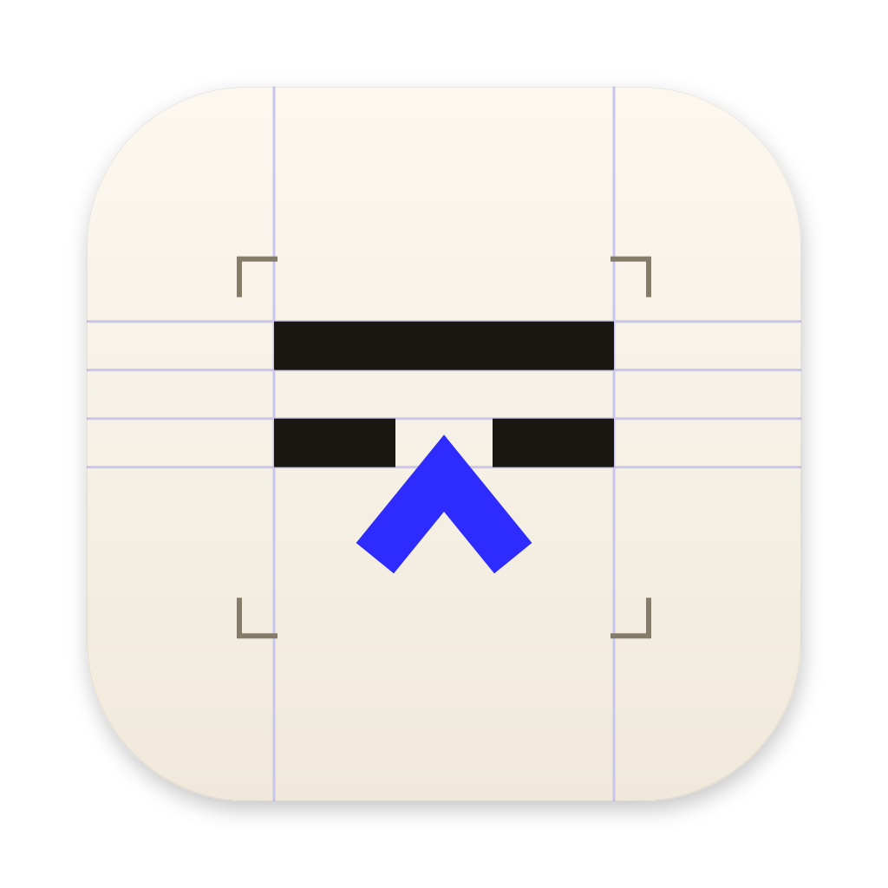
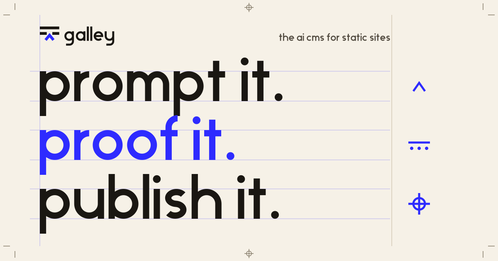

Hero › HeadingHome page
Before: We make brands for the web.
After: Brand and web design for teams that ship.
Galley — the AI CMS for static sites
Every change is a proof before it goes to press. Type in a form, click the page, or ask in chat — see exactly what changed — then publish. It’s just your repo underneath.
The mark is a line of set type opened by a proofreader’s caret: something is being inserted, and it hasn’t gone to press yet. The wordmark is drawn, not typed — circles, stems and one shared descender hook — so it renders anywhere without a font.

Bars are 4 units thick with a 4-unit leading. The lower line breaks for 8 units; the caret’s apex rises into that gap and its feet stop about one bar-pitch below the line — a caret sits under the insertion point, never on it. The upper bar and the caret always share a colour pair: ink + accent, or one colour throughout.

Warm newsprint and printing ink carry the interface. The accent is reserved for the action and the current place — never decoration. Proof colours mean one thing each and always travel with a mark. Ratios below are measured live from the tokens on this page, so they stay true when you switch the theme or the accent.
--accent alone. Try the swatches in the header.Fresh Added: sourdough daily
insert · solid underline + caretFresh Removed: white bread daily
Open Changed: 7 days a week
change / move · dashed underline + transposeNewsreader sets the page: headlines, titles and the proof itself. Figtree runs the interface. IBM Plex Mono labels things precisely — field keys, paths, counts, section numbers. All three are open-licence and self-hosted from @fontsource.
Every change is a proof.
Edit the hero, check the change, publish when it’s right.
hero.heading · +4 · 2 min ago
Insertions and deletions are the product, so they get the care of a set page: tinted like a highlighter, marked like a proof. Each kind of change has its own mark, so meaning survives colour-blindness, greyscale and forced-colours mode.
.g-mark--*. Inherit currentColor..g-ins · .g-del · .g-chg inside .g-proof-textAbout › Body · paragraph 2
We are a small studio Removed: who make Added: making brands and websites for teams that ship. Most of our clients Changed: stay for years, and we Added: still answer the phone ourselves.Removed: We love what we do!
Surfaces are nearly square, like paper. Controls are pills, like the parent brand. One primary action per view — usually Publish.
.g-btn + --primary --secondary --quiet --danger · --sm --lg --xl --icon.g-field · .g-input · .g-select · .g-toggleNo page lives at /contat/. Did you mean /contact/?
From the Team collection.
This removes your unpublished edits to Home page, About page and one image. What’s already published stays as it is.
Make the hero heading say we work with teams that ship, and shorten the subheading.
The heading now reads “Brand and web design for teams that ship.” and the subheading is down to one sentence. Both are waiting in Proof — nothing is published.
Update the pricing page to say prices include VAT.
There are two pricing pages. Which one?
Edit a field, click text on the page, or ask in chat. Every change lands here before anything goes live.
The editor at real density: 13 px interface, 14 px inputs, hairline panes on warm paper. The site’s own page sits on a sunken proofing table; hovering text outlines it for click-to-edit. Narrow the window to see the frame adapt.
Identity, websites and campaigns. Delivered on time.
Book a callMake the hero heading say we work with teams that ship, and shorten the subheading.
Done — both are in Proof. Nothing is published yet.